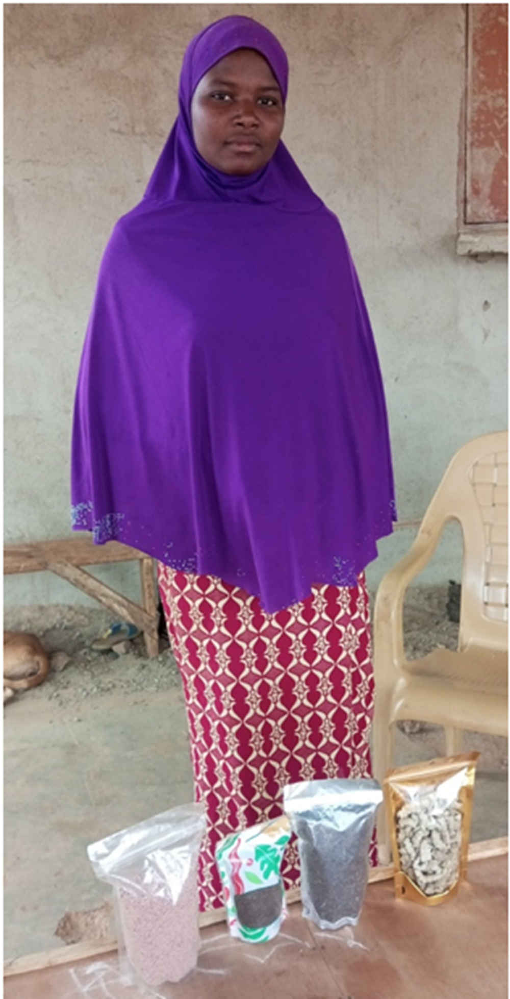

Partie intégrante de l’initiative RISE, le projet USAID Yidgiri est un programme de cinq ans (2020 – 2025)
financé par l’USAID et mis en œuvre par CNFA et ses partenaires dont GRAD et A2N dans les régions du Centre Nord,
du Sahel et de l’Est du Burkina Faso.
Le projet YIDGIRI, membre du RISE II, vise à améliorer durablement les revenus des ménages et l’état nutritionnel
des populations de la zone d’intervention par:
1. le renforcement de la performance des systèmes de marchés,
2. l’accroissement de l’utilisation des intrants et services agricoles de qualité et
3. l’augmentation de la consommation d’aliments locaux sains et riches en nutriments.
Le projet USAID Yidgiri travaille notamment sur :
Le développement de réseaux de santé animale: Pour améliorer la prestation de services de santé animale locaux et minimiser les pertes de revenus pour les producteurs.
L'amélioration de la production de petits ruminants: En formant les producteurs aux nouvelles pratiques de fauche, de conservation, de stockage et de commercialisation du fourrage naturel.
L'introduction de séchoirs solaires: Pour améliorer la qualité et la compétitivité des produits agricoles séchés, comme les fruits et légumes.
L'équipement des organisations de producteurs:En fournissant du matériel agricole pour la campagne agricole, notamment dans les régions du Centre-Nord, de l'Est et du Sahel.
Le développement de chaînes de valeur agricoles:En établissant des liens rentables entre les producteurs agricoles et les acheteurs, facilitant ainsi l'accès aux marchés locaux et régionaux.
Quelques actions de USAID Yidgiri
1. Appui à la production de niébé
Dans le cadre du renforcement des capacités des coopératives agricoles, le projet Yidgiri a apporté un soutien
conséquent aux producteurs de niébé. En plus des formations techniques et de l'encadrement régulier, les
coopératives ont été accompagnées dans l’obtention de leur récépissé officiel, facilitant ainsi leur
reconnaissance légale. Pour améliorer la productivité, Yidgiri a mis à leur disposition divers équipements
agricoles, notamment des motoculteurs, des semoirs, des batteuses, des charrettes et des broyeurs pour la
production de compost. Des sessions de formation sur le compostage ont été organisées afin de promouvoir des
pratiques agricoles durables. Par ailleurs, pour pallier le déficit d’engrais, des subventions en fertilisants
ont été octroyées aux producteurs.
Remise de motoculteurs aux coopératives Batteuse Récolte de niébé
2. Soutien à l’élevage de petits ruminants
Les éleveurs de petits ruminants ont également bénéficié d’un accompagnement technique et de formations
spécifiques pour améliorer leurs pratiques d’élevage. Yidgiri a fourni des équipements adaptés tels que des
faucheuses, des botteleuses, des motoculteurs et des broyeurs destinés à la production d’aliments pour bétail.
Pour renforcer la résilience de cette filière, une subvention en aliments pour bétail a été octroyée afin de
répondre au déficit alimentaire constaté pendant certaines périodes critiques.
Remise de matériels de fauche aux SCOOPs visite commentée de champs fourrager de Yidgiri Séance de mise en botte de foin Visit chez un éleveur de petits ruminant soutenu par YidgiriTransport de bottes de foin
3. Appui à la filière avicole (élevage de volaille)
Les coopératives engagées dans l’élevage de volaille ont également été encadrées techniquement et ont
bénéficié de dotations en équipements spécifiques, notamment des couveuses et des broyeuses pour la fabrication
d’aliments pour volailles. Pour soutenir la rentabilité de cette filière, Yidgiri a également apporté des
subventions en aliments pour volaille.
Broyeur mis à la disposition d'une coopérative Couveuse mis à la disposition d'une coopérative Visite chez un éleveur de volaille soutenu par Yidgiri Visite chez un producteur d'asticots soutenu par YidgiriSéance de production d'asticotsAsticots séchés
4. Valorisation et transformation des produits agricoles
Dans une dynamique de promotion de la nutrition et de la création de valeur ajoutée locale, Yidgiri a
accompagné la mise en place de coopératives de transformation des produits issus des différentes chaînes
de valeur soutenues. Ces structures ont été équipées pour favoriser la transformation locale du niébé,
de la volaille et des produits issus de l’élevage, contribuant ainsi à améliorer la sécurité alimentaire
et nutritionnelle des ménages bénéficiaires.

Visite chez une bénéficiaire d'équipements de transformation
5. Insertion économique des jeunes et des femmes
Pour accroître l’employabilité des jeunes et des femmes au sein de ces chaînes de valeur, Yidgiri a
identifié et accompagné plusieurs d’entre eux dans la formalisation de microprojets. Un appui spécifique
leur a été apporté sous forme d’équipements adaptés à leurs activités. En parallèle, des Activités
Génératrices de Revenus (AGR) ont été soutenues afin de renforcer l’autonomisation économique des groupes
vulnérables et favoriser leur inclusion dans les circuits économiques locaux.